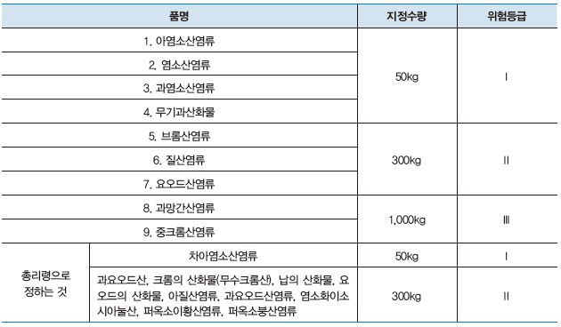

1류 위험물은 산화성 고체로, 수소를 금속 또는 양이온으로 치환한 염류 아염소산, 염소산, 과염소산, 요오드산 염류 등이 있다. 자체는 불연성, 산소를 많이 함유한 산화성 고체이며 무기화합물로서 무색결정, 백색분말로 조해성(고체물질이 공기 중에 놓아두면 수분을 흡수하고 그 수분에 녹는 성질)이 있다. 비중이 1보다 크며 대부분 물에 녹는 성질이다.

모두 산소를 가지고 있는 무기화합물로서 산화제로 작용한다. 자신은 불연성 물질이지만 가연성 물질의 연소를 돕는다. 대부분 무색 결정이거나 백색 분말이다. 가열, 충격, 마찰에 의해 분해되어 산소가 발생하고 가연물과 혼합이 되었을 때는 연소, 폭발이 일어나기도 한다.
물보다 비중이 크고 무거우며 물에 녹는 것이 많고 수용액 상태에서도 성이 있다. 조해성이 있는 것도 있다. (질산칼륨, 질산나트륨, 질산암모늄과 같은 염류) 무기과산화물 중 알칼리 금속 과산화물과 삼산화크롬은 물과 반응하여 를 방출하고 발열한다. 이런 의미에서 제3류 위험물과 비슷한 금수성 性)물질이다.